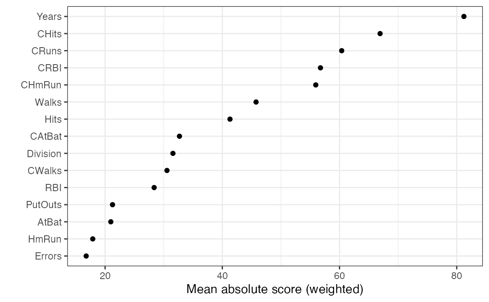
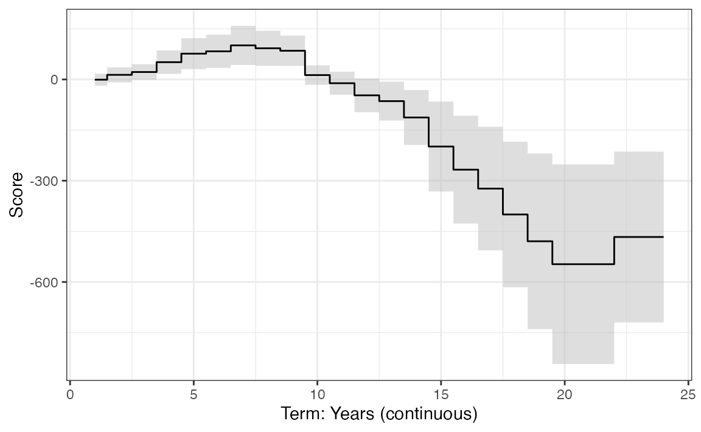
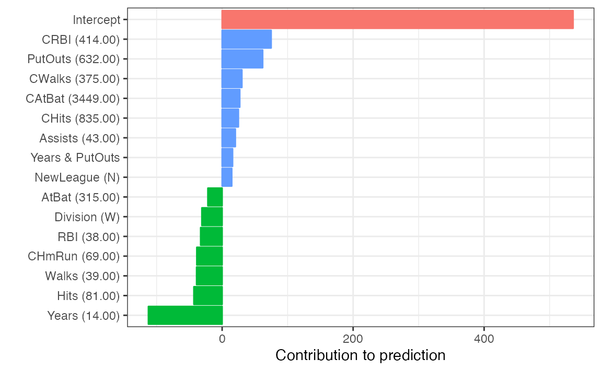

intro
ebm.RmdWARNING: This vignette is very much a work in progress and is subject to change as the package evolves!
Getting started
This package requires reticulate and an appropriate Python environment with the interpret library installed. If you’re not a Python user, then I’d suggest reading through some of the reticulate vignettes to learn more. In particular:
- See
vignette("versions", package = "reticulate")for learning more about Python version configuration. - See
vignette("python_packages", package = "reticulate")for learning more about installing Python packages. - See
vignette("python_primer", package = "reticulate")for learning more about interacting with Python objects through reticulate (this can be useful for understanding more advanced usage of the ebm package)
For simplicity, this package also provides an
install_interpret() function for installing the sole Python
library dependency; see ebm::?install_interpret() for
details.
The following section provides a brief overview of the
ebm() function. For more detailed usage and examples, read
the following articles:
- For producing interactive plots, see
vignette("interactive"). - For merging several fitted EBM models into one, see
vignette("merging"). - For advanced usage of the package, as well as a classification
example, see
vignette("advanced").
Using the ebm package
To illustrate the regression case, we’ll use the Hitters
data from the ISLR2 package. A
sample of the data are shown below.
data("Hitters", package = "ISLR2")
# Remove rows with missing response values
head(hitters <- Hitters[!is.na(Hitters$Salary), ])
#> AtBat Hits HmRun Runs RBI Walks Years CAtBat CHits CHmRun
#> -Alan Ashby 315 81 7 24 38 39 14 3449 835 69
#> -Alvin Davis 479 130 18 66 72 76 3 1624 457 63
#> -Andre Dawson 496 141 20 65 78 37 11 5628 1575 225
#> -Andres Galarraga 321 87 10 39 42 30 2 396 101 12
#> -Alfredo Griffin 594 169 4 74 51 35 11 4408 1133 19
#> -Al Newman 185 37 1 23 8 21 2 214 42 1
#> CRuns CRBI CWalks League Division PutOuts Assists Errors
#> -Alan Ashby 321 414 375 N W 632 43 10
#> -Alvin Davis 224 266 263 A W 880 82 14
#> -Andre Dawson 828 838 354 N E 200 11 3
#> -Andres Galarraga 48 46 33 N E 805 40 4
#> -Alfredo Griffin 501 336 194 A W 282 421 25
#> -Al Newman 30 9 24 N E 76 127 7
#> Salary NewLeague
#> -Alan Ashby 475.0 N
#> -Alvin Davis 480.0 A
#> -Andre Dawson 500.0 N
#> -Andres Galarraga 91.5 N
#> -Alfredo Griffin 750.0 A
#> -Al Newman 70.0 AWe’ll start by fitting a basic EBMRegressor to the
hitters data set using Salary as the response.
Note that the ebm() function currently only supports the
usual R formula interface.
library(ebm)
# Fit a default EBM regressor
fit <- ebm(Salary ~ ., data = hitters, objective = "rmse")
fit # still need to implement print() and summary() methods
#> ExplainableBoostingRegressor(early_stopping_tolerance=0)You can obtain predictions using the familiar predict()
method employed by most modeling packages in R. Note that through
bagging, EBMs can provide standard errors for the predictions if
requested.
head(predict(fit, newdata = hitters))
#> [1] 489.4548 626.1970 870.3430 169.8797 659.6543 270.5382
# Ask for predictions and standard errors
head(predict(fit, newdata = hitters, se_fit = TRUE))
#> [,1] [,2]
#> [1,] 489.4548 53.92471
#> [2,] 626.1970 98.39167
#> [3,] 870.3430 241.04199
#> [4,] 169.8797 43.14385
#> [5,] 659.6543 54.02381
#> [6,] 270.5382 155.71903You can produce several plotly-based graphs to help interpret
the output of "EBM" objects using the generic
plot() method; this function supports both global and local
interpretations. The default simply prints a global measure of
importance based on the sum of the absolute value of each variable’s
term contributions. (For Markdown-type documents, like this vignette,
you need to specify display = "markdown"; see
?ebm::plot for details.)
library(ggplot2)
theme_set(theme_bw())
# Plot feature importance (i.e., mean absolute scores)
plot(fit, n_features = 15)
You can also plot the individual shape functions (or term contributions), as shown below:
plot(fit, term = "Years")
Pairwise interactions can be visualized by supplying
plot() with an appropriate pair of variables.
You can also display local explanations (though, one at a time) by
specifying local = TRUE:
# Understand an individual prediction
x <- subset(hitters, select = -Salary)[1L, ] # use first observation
plot(fit, local = TRUE, X = x, y = hitters$Salary[1L], geom = "col")